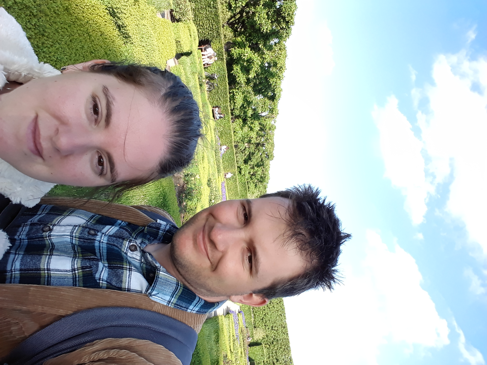

Ahogy már tudni lehet rólam sokad éve járok a Műszaki Egyetemre. Ez idő alatt sajnos nem előre, hanem inkább hátrafelé haladtam. Régen még matematika, fizika és történelem versenyeken is jó eredményekkel szerepeltem, de ma már egy házi feladat határidejét sem tudom tartani.
Sajnos csak ezen feltebbi tanulmányi eredményemet látom igazán kimagaslónak annyi év után.
